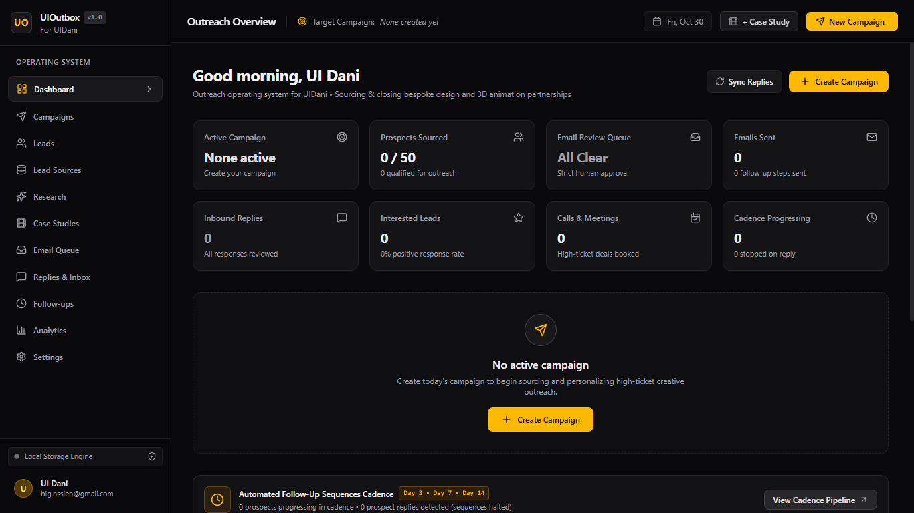
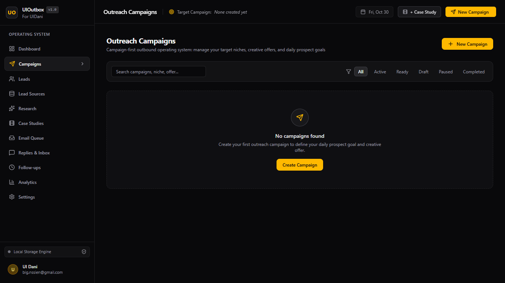
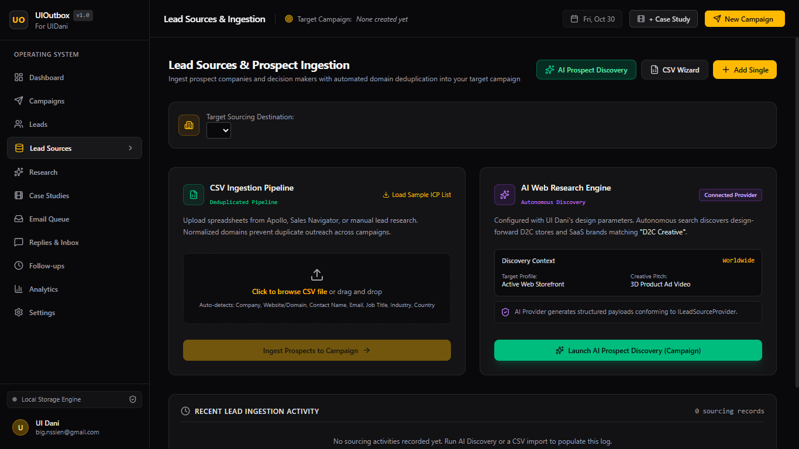
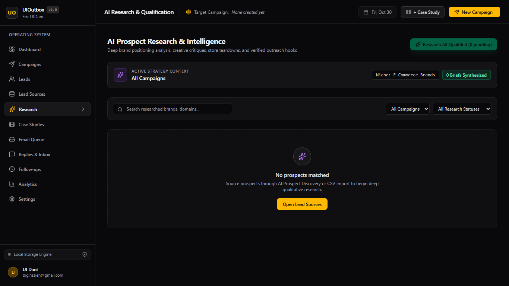
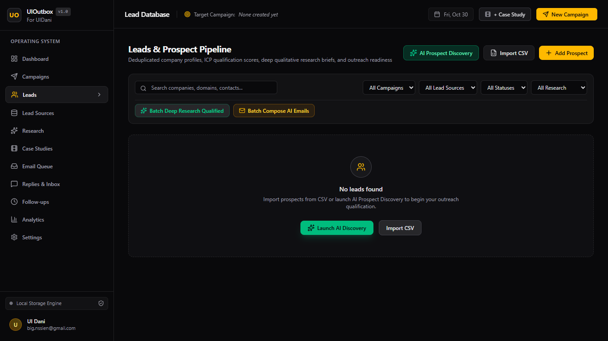
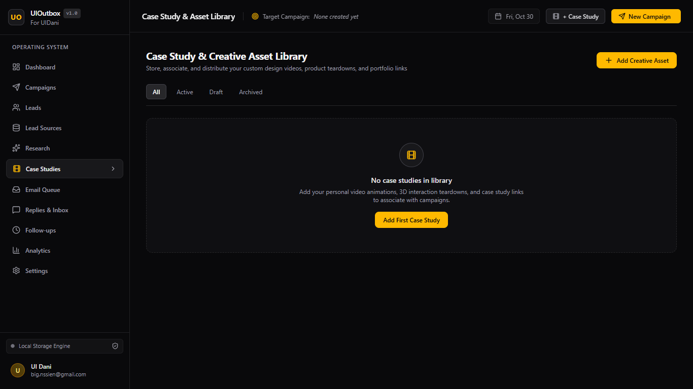
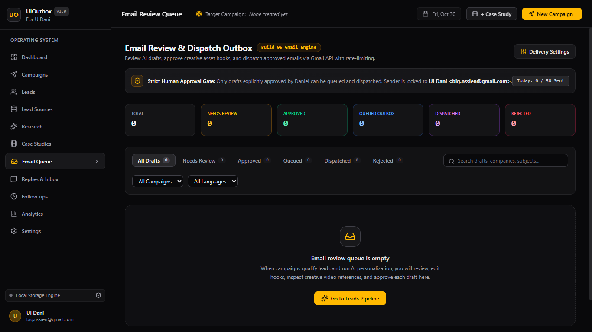
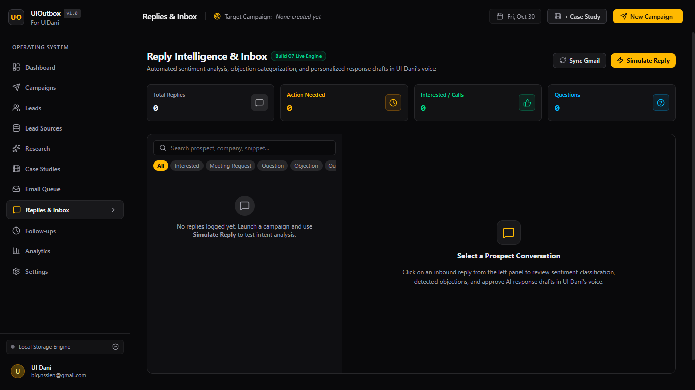
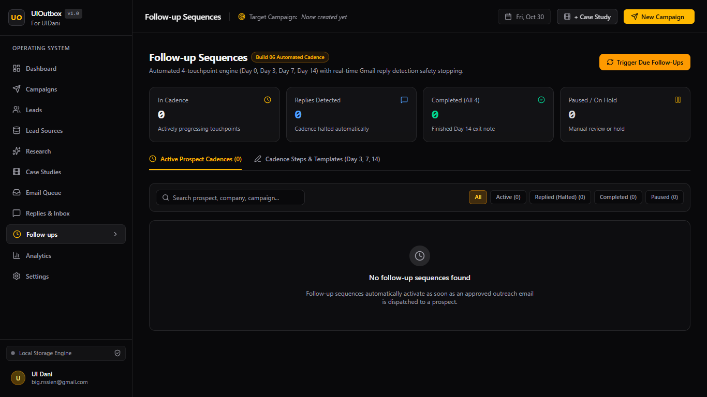
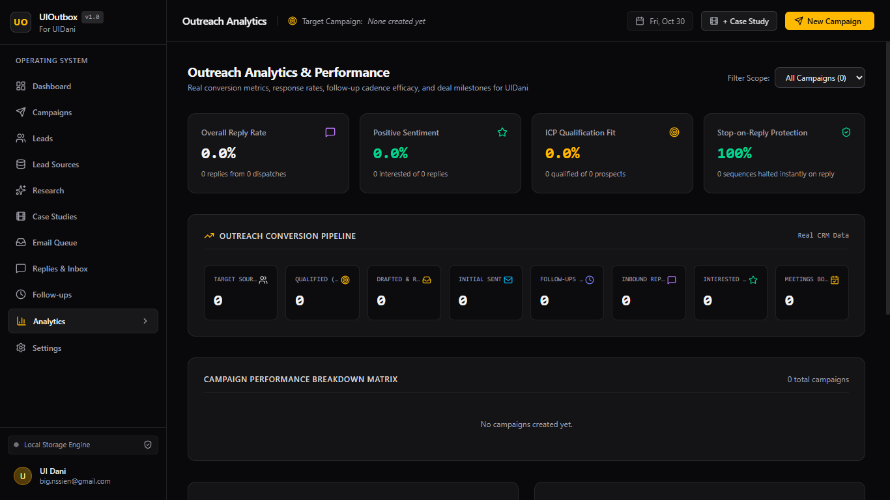

Define the offer, audience, market, and purpose.
SEV7N FOLD / INTERNAL OPERATING SYSTEM
PRODUCT 03 — SALES INTELLIGENCE & OUTBOUND AUTOMATION
INTELLIGENCE
IN. OPPORTUNITIES
OUT.
UIOutbox is a private, campaign-first sales operating system built for UI Dani. It connects prospect discovery, company research, creative offers, and carefully reviewed outreach in one working flow.
BUILT AROUND CREATIVE SERVICESDESIGNED FOR HUMAN CONTROL
01 / THE OPERATING VIEWCAMPAIGNS → OPPORTUNITIES

A single workspace for the whole outbound process—from defining an offer to understanding which opportunities are worth pursuing.
CAMPAIGN FIRST / CONTEXT ALWAYSTHE PROBLEM / 02
MORE CONTACTS
DON’T MEAN
BETTER OUTREACH.
Creative businesses can lose time on poor-fit prospects, shallow research, generic sales messages, and disconnected follow-up workflows.
UIOutbox is built around a more useful question: which businesses have a real need for this creative offer, and what evidence makes the approach relevant?
PRECISION BEFORE VOLUMEHUMAN CONTROL BEFORE DELIVERY
03 / START WITH AN OFFERTHE CAMPAIGN SETS THE CONTEXT
EVERYTHING
STARTS WITH
A CAMPAIGN.
A campaign defines the creative service, the ideal customer profile, the market and language, the commercial angle, and the authentic case study that can support the conversation.
Prospects are assessed against a specific opportunity—not collected as disconnected contacts.

04 / FIND THE FITDISCOVERY WITH A REASON
DISCOVER / INVESTIGATE / QUALIFY
EVIDENCE
BEFORE A
PITCH.
UIOutbox is designed to discover companies that fit a campaign, examine their brand and creative presence, and make the qualification rationale visible.
The point is grounded personalization: no invented observations, no fake familiarity, and no outreach without a clear reason to exist.



05 / CONNECT THE WORK TO THE NEEDCREATIVE PROOF / COMMERCIAL RELEVANCE
CASE STUDY LIBRARY
THE RIGHT
WORK. THE
RIGHT REASON.
UIOutbox is designed to pair a relevant, authentic creative case study with the campaign and prospect research—so outreach can point to work that actually supports the offer.

06 / HUMAN REVIEW IS THE GATEAI PREPARES / A PERSON DECIDES

NOTHING
LEAVES WITHOUT
APPROVAL.
AI can help prepare research and draft a relevant message. The operator reviews the context, edits or regenerates the copy, and decides whether it is ready.
Approved messages move into a controlled queue. Unsuitable outreach can be rejected before it reaches anyone.
07 / A COMPLETE OPERATING LOOPFROM SIGNAL TO LEARNING
Find companies with a reason to fit.
Build context from real business evidence.
Ground and approve each message.
Track conversations, follow-ups, and outcomes.



UIOUTBOX WITHIN SEV7N FOLD / 08
THE SYSTEM
THAT HELPS
FIND THE NEXT.
FOLD MOTION creates new ways to make creative work. UIOutbox is being built to help identify the businesses that may need it and approach them with more context.
It is both an internal operating asset and a bespoke software system—an applied example of how SEV7N FOLD uses technology to create practical leverage for business growth.
UIOUTBOX / SEV7N FOLD